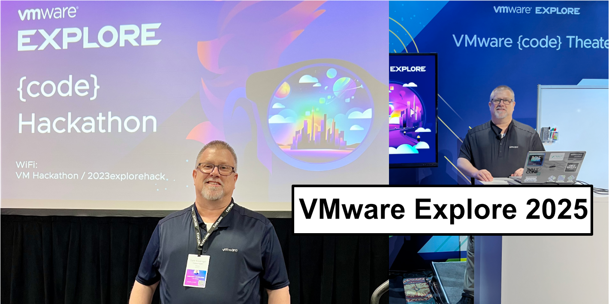
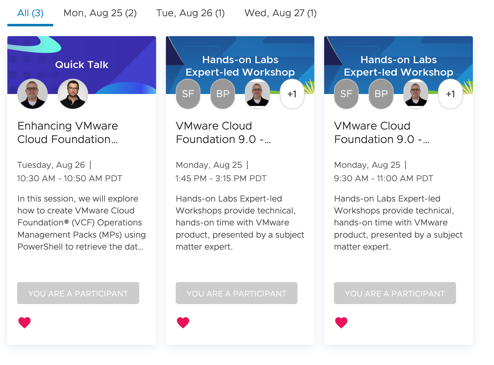

VMware Explore 2025 | My Sessions and more...

Deep Dive into My Involvement at VMware Explore 2025.
"Technology can amplify your message, but the real power of a presentation lies in the connection you make with your audience. Remember, it's not the slides or the software that will leave a lasting impact—it's your passion and the story you tell."
When and Where:
Website: VMware Explore 2025.
Las Vegas Date: August 25 – 28, 2024
The Venetian Convention and Expo Center
What Will I be doing at VMware Explore 2025:
- Presenting one session during the event
- Participating in four Hands-on Labs as presenter or assisting the users attending
- Serving as a Team Captain in the Hackathon
If you’ve been reading my blogs and are attending VMware Explore, I’d love to connect! Meeting others in the vCommunity and geeking out over VMware technology is one of the highlights of the event for me.
Come say hello and tell me about the cool things you’re doing with VMware solutions. Better yet—write a blog post about it! I’d be happy to feature you as a guest blogger right here on this site.
Let’s keep the vCommunity strong by sharing ideas, experiences, and inspiration.
My VMware Explore 2025 Session Details
My sessions in the VMware Explore 2025 Content Catalog.
Sessions:
- Enhancing VMware Cloud Foundation Operation Management Packs with PowerShell | CODEQT1121LV
- In this session, we will explore how to create VMware Cloud Foundation® (VCF) Operations Management Packs (MPs) using PowerShell to retrieve the data. We will demonstrate how to use PowerShell to run scripts to gather information that can be used to build custom MPs, especially when APIs are not available. PowerShell, with the addition of PowerShell Modules, is a powerful way to get data sources into your MPs, expanding the scope of your monitoring capabilities. Learn how to think outside the box by creating MPs that go beyond traditional API integration and access data that is not readily available via standard APIs. This session will empower you to innovate and create custom MPs tailored to your specific operational needs. Discover how a PowerShell script can serve as an API frontend for your automation workflows.
- I’m excited to share that Don Horrox, Systems Engineer, will be joining me as a co-presenter for this session. I first met Don when he was a VMware customer that I worked with, and I was immediately struck by his deep passion for VMware technologies. Since then, it’s been a pleasure collaborating with him—and together, we’ve put together some compelling content that we’re looking forward to presenting! Check out Don's blog, vChamp, to see what he has been sharing with the vCommunity.
- VMware Cloud Foundation 9.0 - Operations: VCF Health and Diagnostics | ELW-HOL-2601-11
- Hands-on Labs Expert-led Workshops provide technical, hands-on time with VMware product, presented by a subject matter expert.
- VMware Cloud Foundation 9.0 - Operations: Monitoring Network and Storage Operations In the Private Cloud | ELW-HOL-2601-09
- Hands-on Labs Expert-led Workshops provide technical, hands-on time with VMware product, presented by a subject matter expert.
Hackathon:
- Monday, August 25 • 7 PM – 11 PM
Learn skills, connect with others in the coding community, and enjoy an after-hours evening of competition and socializing with other data-center automators.
The Hackathon is always one of my favorite parts of VMware Explore. I’ve had the privilege of serving as a Team Captain for the past two years—both times, our team proudly finished in 2nd place. I’m thrilled to return as a Team Captain once again for the 2025 Hackathon.
This year, our team will be exploring how to hack VMware products and RVTools exports using PowerShell MCP (Model Context Protocol). If that sparks your interest, I’d love for you to reach out! Bring your creativity and let’s collaborate on building prompts around real-world use cases—things that help solve practical challenges using automation and AI-driven workflows.
Let’s build something meaningful together!
Content Catalog:

Links to resources discussed is this Blog Post:
- VMware Explore 2025.
- If you found this blog article helpful and it assisted you, consider buying me a coffee to kickstart my day.